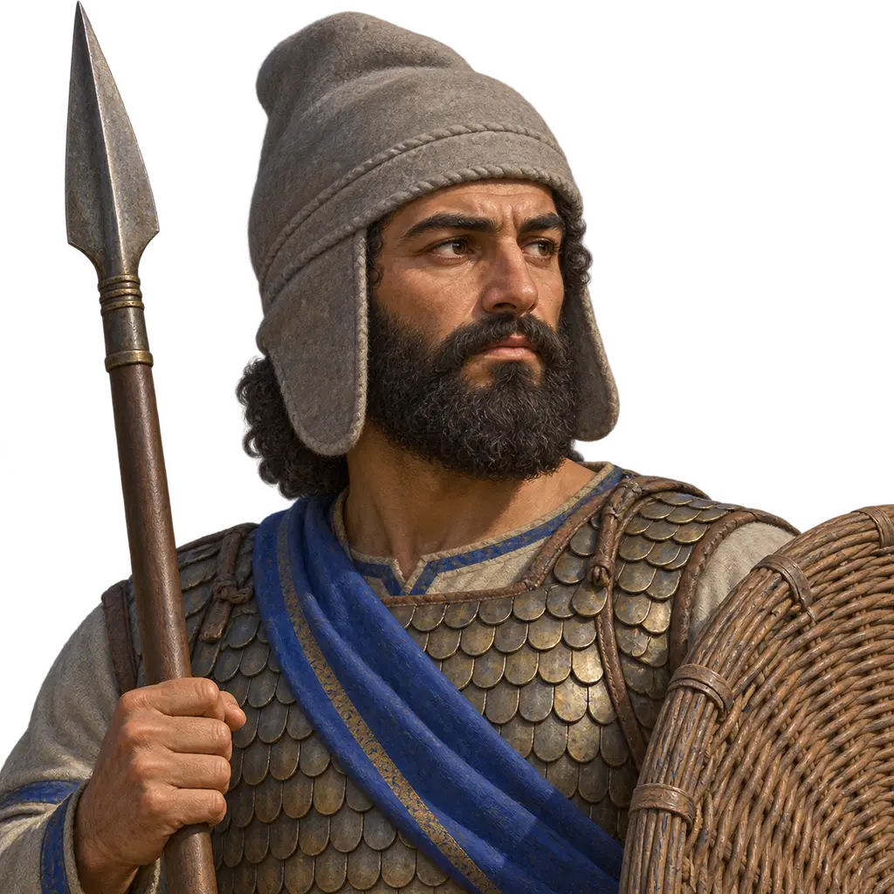
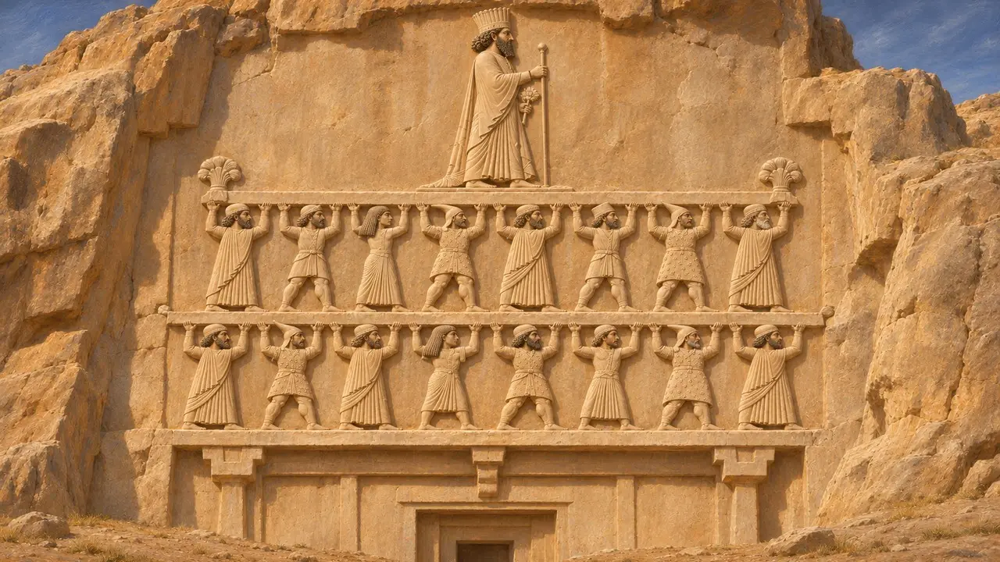
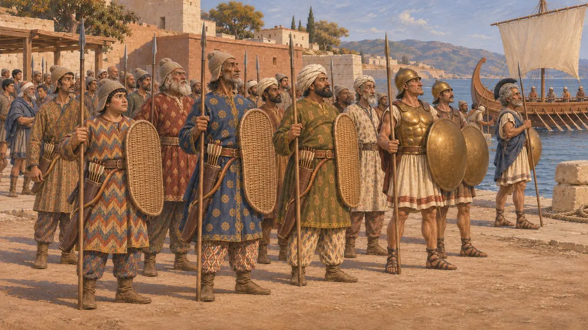
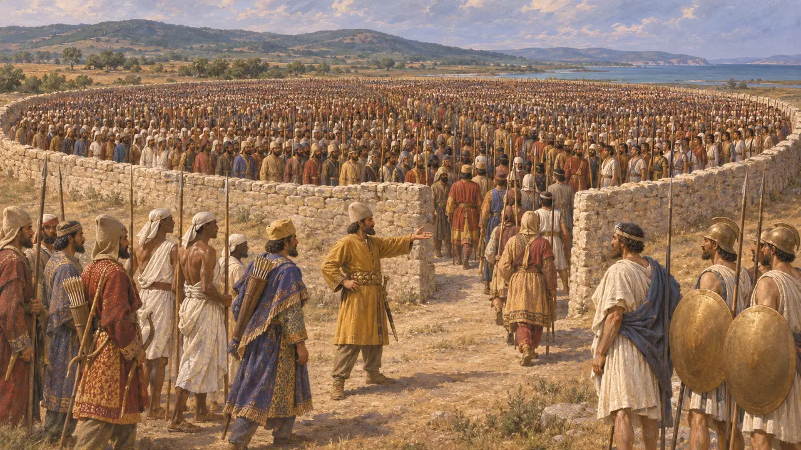
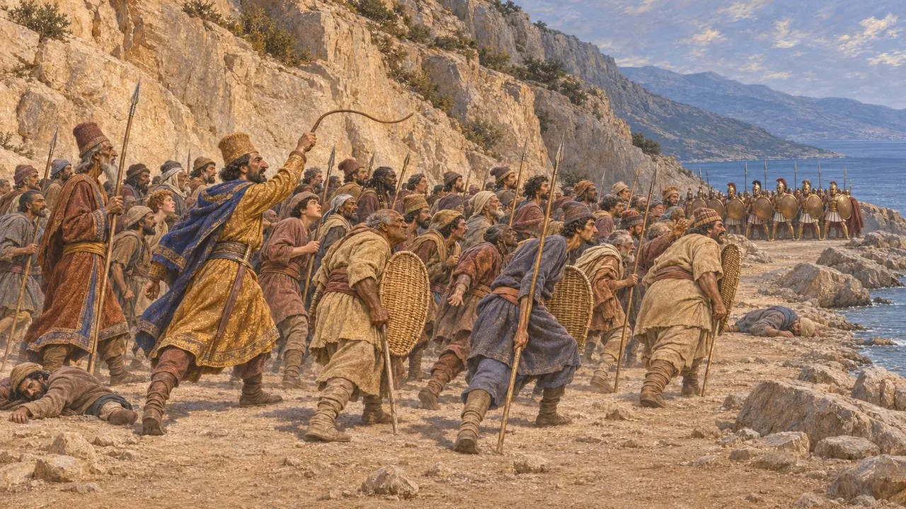
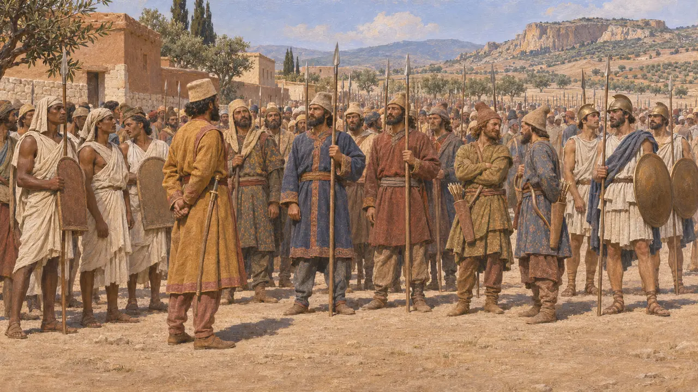

Encyclopedia › Soldiers and ships

Levies of the subject peoples
Contingents raised from the peoples of the Achaemenid empire, about 530-479 BCE
In the game: Level 3: The Lie, Level 5: The Charter, Level 6: The Bridge of Boats, Level 7: Sardis Burns, Level 9: The Canal
The Persian kings fought with soldiers drawn from many subject peoples, each serving in its own dress and with its own weapons under Persian command. Medes, Cissians, Lydians, Ionian Greeks and dozens of others marched beside the Persians, which let the King put large armies into the field and showed the reach of his rule.
In the game: The game splits each people into a levy who holds the line and a bowman who shoots from behind, though Herodotus's Persian-armed infantry carried spear and bow together. Its notes on Median, Cissian and Lydian arms follow his catalogue.

The peoples who bore the King's throne
In the recordOn Darius's tomb at Naqsh-e Rostam, figures from the subject lands hold up the royal throne, and the inscription invites the reader to look at them to learn how many lands the King held. At Behistun, Darius says he fought the rebels of 522-521 with the Persian and Median army that stood by him. Murashu texts of the later 400s show Babylonian bow land, whose holders owed a soldier or paid silver instead.
DNa §4; DB; Murashu archive

Each in its own dress and arms
Ancient accountHerodotus lists the peoples Xerxes led to Greece in 480. He says the Medes were armed like the Persians, adding that this dress was Median rather than Persian in origin, and that the Cissians were equipped the same way but wore turbans instead of felt caps. The Lydians, he says, had arms most like the Greeks, and the Ionians served in the fleet in Greek equipment.
Herodotus 7.61-62; 7.74; 7.94

Counted by tens and thousands
Ancient accountHerodotus says Xerxes' infantry was counted at Doriscus by packing ten thousand men into an enclosure and filling it again and again. Each people had its own native leaders, but Persian commanders of ten thousand appointed the officers over thousands, hundreds and tens. Earlier, he says, Darius set up pillars at the Bosporus naming the peoples who marched against the Scythians, and left the Ionians to guard his bridge over the Ister.
Herodotus 7.60; 7.81; 4.87; 4.97

In battle
Ancient accountAt Thermopylae, Herodotus says, Xerxes first sent in the Medes and Cissians, who suffered heavy losses before the Immortals replaced them. He also describes officers driving men forward with whips, a picture that fits the Greek contrast between free citizens and the King's subjects. At the Ister, he says, the Ionian tyrants broke only the Scythian end of the bridge as a pretence, after Histiaeus argued against destroying it.
Herodotus 7.210-211; 7.223; 4.136-142

How many, and how willing
DisputedHerodotus gives Xerxes 1,700,000 foot soldiers, a figure historians reject as greatly exaggerated; modern estimates run from under a hundred thousand to a few hundred thousand. Some scholars think his catalogue draws on a Persian list of subject peoples rather than the army in the field. How willing the levies were is also argued, since Greek writers stressed coercion while royal inscriptions present the peoples as loyal supporters.
Herodotus 7.60; J. F. Lazenby, The Defence of Greece, 1993; P. Briant, From Cyrus to Alexander, 2002
Sources
- Herodotus, Histories 7.60-99
- Herodotus, Histories 4.87-142
- Naqsh-e Rostam inscription of Darius (DNa)
- Behistun inscription (DB)
- P. Briant, From Cyrus to Alexander, 2002
- M. Stolper, Entrepreneurs and Empire, 1985